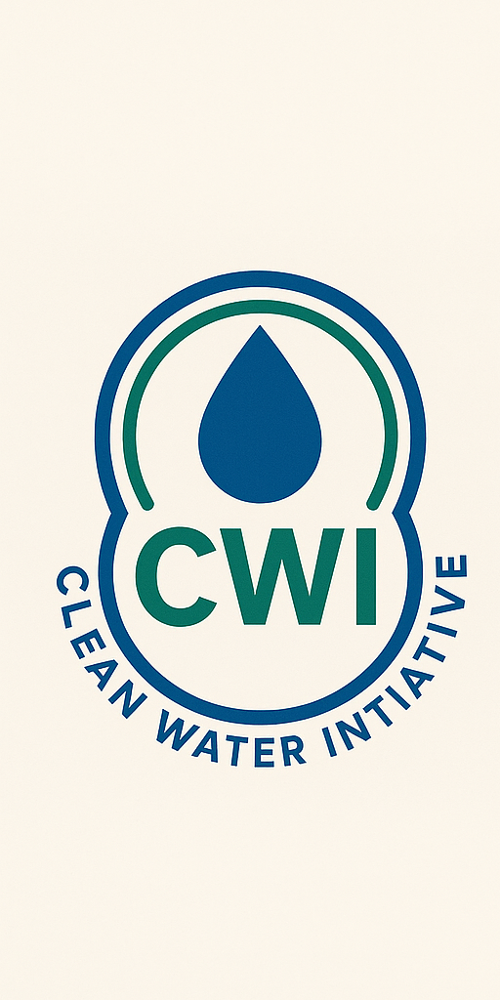
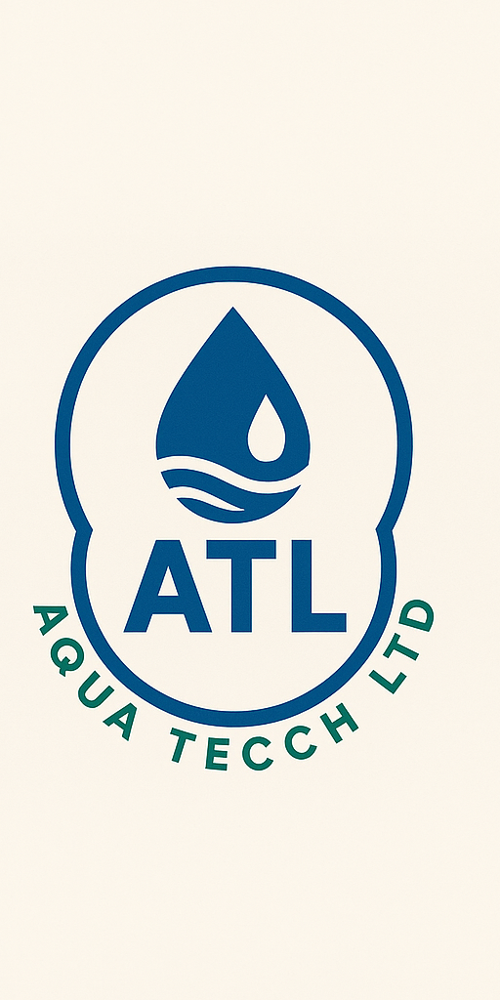

Clean, Safe Water, Anywhere!
Check water quality near you or find safe water sources.
Get StartedWater Safety Map
Explore water safety across Kenya. Blue markers indicate safe water, light blue shows moderately safe sources, and red highlights unsafe water sources.
Our Features
- I. Real-time water quality monitoring: Allows users to access up-to-date information about water quality in their area.
- II. GPS-enabled water source mapping: Helps users locate water sources near them.
- III. Community-driven reporting and support: Empowers users to contribute to the platform by reporting water safety issues.
- IV. Real-time water quality maps: Provides up-to-date information on water safety.
- V. DIY water safety checklist tools: Offers simple tools for users to assess water safety.
- VI. IoT and AI-ready infrastructure: Designed for future upgrades with advanced technologies.
- VII. Responsive web and mobile platform: Accessible on various devices.
- VIII. Ability to add/report water sources: Enables users to expand the platform's database.
- IX. Option to submit test results or photos: Allows for visual and data-driven reporting.
- X. Step-by-step guides and safety checklists: Provides educational support for users.
How to Get Started with Aqua Zuri
1
Create an Account
Sign up for free to access all features and contribute to the community.
2
Find Water Sources
Use our map to locate water sources near you and check their safety status.
3
Report & Share
Submit water quality information and help others find safe water.
Testimonials
Our Partners
Clean Water Initiative

Ministry of Water
Aquatech Limited

Don't have an account?
You can also reach us at: support@aquazuri.com